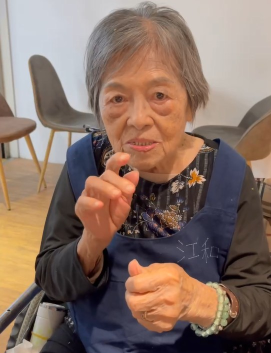

html>
<html lang="zh-Hant">
<head>
  <meta charset="UTF-8" />
  <meta name="viewport" content="width=device-width, initial-scale=1.0" />
  <title>AAC Demo</title>
  <style>
    html, body {
      margin: 0; height: 100vh; display: flex;
      font-family: sans-serif;
    }
    .sidebar {
      width: 20%;
      background: #f0f0f0;
      overflow-y: auto;
      padding: 10px;
      display: flex;
      flex-direction: column;
      align-items: center;
      gap: 10px;
    }
    .sidebar img {
      width: 100%; height: auto; object-fit: cover;
      cursor: pointer; border: 2px solid transparent;
    }
    .main {
      width: 80%;
      display: flex;
      flex-direction: column;
      align-items: center;
      justify-content: space-between;
      background: #ffffff;
      padding: 10px;
      box-sizing: border-box;
    }
    .main-photo {
      width: 100%;
      height: 75vh;
      object-fit: contain;
    }
    .buttons {
      width: 100%;
      display: flex;
      justify-content: center;
      gap: 10px;
      flex-wrap: wrap;
    }
    .buttons img {
      width: 80px;
      height: 80px;
      object-fit: cover;
      cursor: pointer;
    }
  </style>
</head>
<body>
  <div class="sidebar" id="photoList"></div>
  <div class="main">
    
    <div class="buttons" id="soundButtons"></div>
  </div>

  <script>
    const photos = ["a", "b", "c", "d", "e", "f"];
    const photoList = document.getElementById("photoList");
    const mainPhoto = document.getElementById("mainPhoto");
    const soundButtons = document.getElementById("soundButtons");

    let currentAudio = null;  // 儲存目前播放的音檔物件

    photos.forEach(photo => {
      const img = document.createElement("img");

      // 全部改成 .jpg
      img.src = `abc/pho/${photo}.jpg`;
      img.alt = photo;

      img.onclick = () => {
        mainPhoto.src = img.src;
        soundButtons.innerHTML = "";

        for (let i = 1; i <= 3; i++) {
          const btn = document.createElement("img");
          btn.src = `abc/pic/${photo}${i}.jpg`;
          btn.alt = `${photo}${i}`;
          btn.onclick = () => {
            // 如果有正在播放的音檔，先暫停並重設
            if (currentAudio) {
              currentAudio.pause();
              currentAudio.currentTime = 0;
            }
            currentAudio = new Audio(`abc/wav/${photo}${i}.wav`);
            currentAudio.play();
          };
          soundButtons.appendChild(btn);
        }
      };

      photoList.appendChild(img);
    });

    // 自動載入第一張
    window.onload = () => {
      document.querySelector(".sidebar img")?.click();
    };
  </script>
</body>
</html>